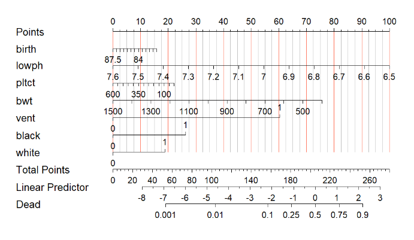

lrm(formula = dead ~ birth + lowph + pltct + bwt + vent + black +
white, data = tmp, x = T, y = T)
Coef S.E. Wald Z Pr(>|Z|)
Intercept 38.3815 11.0303 3.48 0.0005
birth -0.1201 0.0914 -1.31 0.1890
lowph -4.1451 1.1881 -3.49 0.0005
pltct -0.0017 0.0019 -0.91 0.3644
bwt -0.0031 0.0006 -5.14 <0.0001
vent=1 2.7526 0.7436 3.70 0.0002
black 1.1974 0.8448 1.42 0.1564
white 0.8597 0.8655 0.99 0.32064 列线图的本质
4.1 列线图与模型的关系
列线图又叫诺莫图，nomogram plot，前面我们展示了绘制二分类变量（logistic）和生存资料（Cox）列线图的多种方法，不知道大家有没有考虑过，其他模型可以绘制列线图吗？例如lasso回归、随机森林等。这就涉及到列线图到底是怎么绘制出来的。
对于一个含有多个自变量和1个因变量的逻辑回归来说，回归方程可以写成类似 y=a + b1x1 + b2x2 + b3x3 这种形式，其中b是回归系数。列线图就是把回归方程用图形的方式展现出来，线段的长短（分数）根据回归系数计算。
4.2 列线图分数的计算方法
以下面这个列线图为例：

上面这个列线图是一个逻辑回归的（之前logistic回归列线图推文中的fit2），它的逻辑回归的结果是这样的：
在最下面列出了每个自变量的回归系数，我们首先 把回归系数绝对值最大的设置为100分，在这个例子中是lowph，它的回归系数绝对值是4.1451,也就是对应的是100分，然后其他自变量都是根据lowph进行转换 ，即可算出其他自变量对应的得分！
然后根据这个表达式得到的列线图的结果是这样的：
nom2
Points per unit of linear predictor: 21.93145
Linear predictor units per point : 0.04559661
birth Points
81.5 16
82.0 14
82.5 13
83.0 12
83.5 11
84.0 9
84.5 8
85.0 7
85.5 5
86.0 4
86.5 3
87.0 1
87.5 0
lowph Points
6.5 100
6.6 91
6.7 82
6.8 73
6.9 64
7.0 55
7.1 45
7.2 36
7.3 27
7.4 18
7.5 9
7.6 0
pltct Points
0 22
50 20
100 18
150 17
200 15
250 13
300 11
350 9
400 7
450 6
500 4
550 2
600 0
bwt Points
400 76
500 69
600 62
700 55
800 48
900 41
1000 34
1100 27
1200 21
1300 14
1400 7
1500 0
vent Points
0 0
1 60
black Points
0 0
1 26
white Points
0 0
1 19
Total Points Dead
53 0.001
104 0.010
157 0.100
181 0.250
205 0.500
229 0.750
253 0.900上面的 Linear predictor units per point: 0.04559661 意思是每一个小刻度代表的分数是0.04559661分，这实际上是最大回归系数的1/100(这里应该是4.1451/100=0.041451，实际上会有偏差！)。
4.2.1 分类变量分数的计算
以vent为例，vent=1的时候，它的回归系数是2.7526，那么它对应的分数应该是 2.7526/0.04559661 * 100 ≈ 60，上面得到的结果是60分，一样的！black应该是 1.1974/0.04559661 * 100 ≈ 26，也和我们算的差不多！
这就是分类变量分数的计算。
4.2.2 连续性变量分数的计算
连续性自变量需要考虑取值范围，它的解释应该是每增加一个单位，因变量变化多少，对于pltct来说，系数是-0.0017，就是每增加1各单位，因变量减少0.0017。
pltct是600，对应的分数是0分，那么如果是100，对应的分数就是 （600-100）* (0.0017/0.04559661) ≈ 18。
这就是连续性变量分数的计算。
了解了列线图的分数计算方法，即使没有R语言，你也可以通过手动计算算出来，这样你可以自己画图！（理论上可行，但实际上很难，至少我还没见到过…）
根据这个思路，理论上凡是有回归系数的、有变量重要性的，都可以画列线图展示出来，并不局限于logistic和cox，但是模型在临床中的解释就很难了。